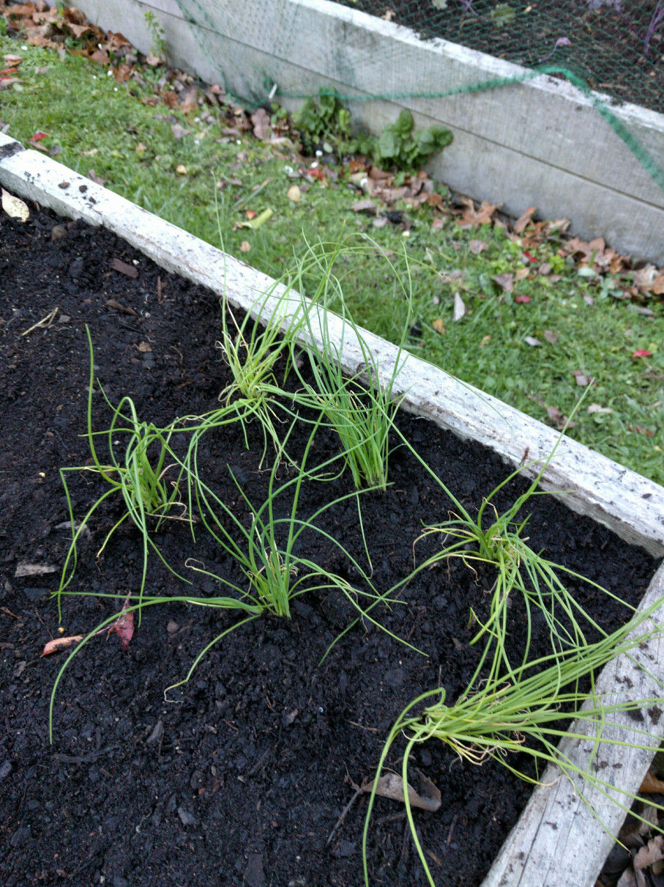

Vaughan Kitchen
Home
>
Garden
>
Plants
> Spring Onion - Paradox
Info From Tag
The bulb, stem's and green leaves are edible, making this vegetable ideal for the home garden.
POSITION: Full Sun
PLANT: 10cm apart
SOIL: Well drained soil
WATER: Water regularly
HANDY TIP: Ideal for use in salads or as a garnish
